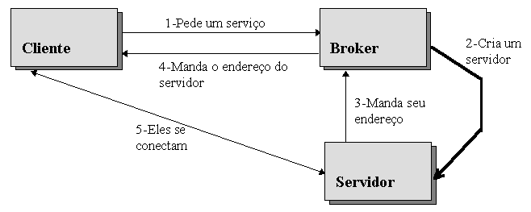
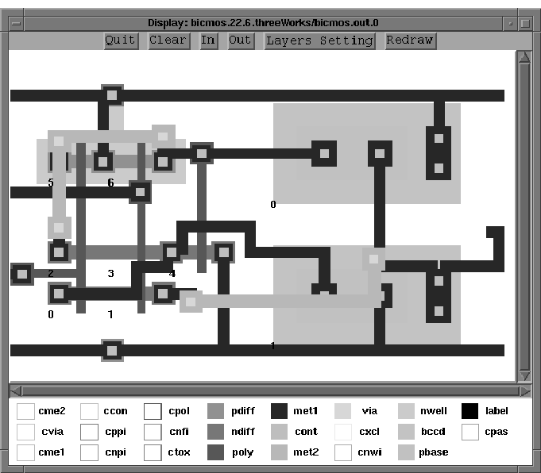
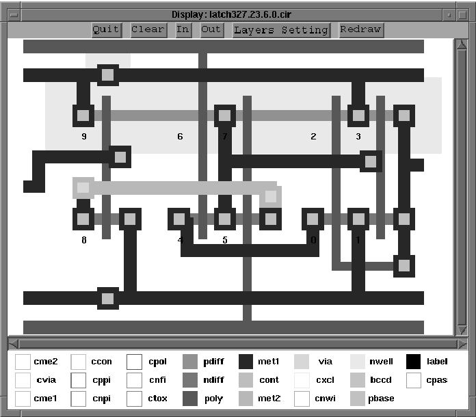

Contato:
Dilvan de Abreu Moreira
LCAEE-FEE-UNICAMP - Caixa Postal 6061
13081-970 Campinas-SP Brasil
E-mail: d.moreira@ieee.org
Na literatura, agentes (software agents) são definidos
como componentes de software capazes de comunicar e cooperar com
seus pares por meio da troca de mensagens. Esse artigo mostra
como essas características podem ser exploradas na geração
de layout VLSI. Vários agentes podem ser usados para resolver cooperativamente um problema de posicionamento e roteamento de
circuitos. No exemplo mostrado, grandes agentes são usados
para dividir o sistema em servidores que rodam distribuídos
numa rede de computadores e pequenos agentes são usados
dentro de alguns desses servidores trabalhando em grupos para
realizar tarefas complexas. A filosofia de projeto é que
competência deve emergir do comportamento coletivo de um
grande número de agentes simples.
Na literatura, agentes (software agents) são definidos como componentes de software que se comunicam com seus pares por meio da troca de mensagens usando uma linguagem de comunicação [1]. Eles são caracterizados por sua habilidade de comunicar e cooperar entre si. Apesar de agentes poderem ser tão simples quanto uma subrotina, eles geralmente são entidades maiores com algum grau de autonomia. Agentes podem ser empregados na resolução de um grande numero de problemas, incluindo a geração automática de layout para circuitos VLSI (Very Large Scale Integration).
O projeto de circuitos ASIC (Application Specific Integrated Circuit) é geralmente baseado numa especificação de projeto hierárquica. Grandes módulos são formados por submódulos menores, que são formados por submódulos ainda menores. Os menores módulos dessa hierarquia são compostos por células contendo apenas transistores, resistores ou capacitores. Esses módulos, ou células, tem uma complexidade comparada a componentes SSI (Small Scale Integration), como somadores, flip-flops etc. Eles podem ser gerados por projetistas humanos e armazenados em bibliotecas de células (cell libraries). Ou podem ser automaticamente construídos por ferramentas geradoras de layout.
Agentes podem ser usados em ferramentas geradoras de layout para gerar layouts VLSI que sejam mais flexíveis através de uma solução cooperativa do problema de posicionamento e roteamento dos componentes de um circuito. O sistema Agents é um gerador de layout que utiliza o modelo de agentes para gerar automaticamente full custom layout de células de circuitos nas tecnologias CMOS, BICMOS e circuitos mistos digital/analógicos. Ele usa a filosofia de agentes em dois níveis. Ao nível de programa, ele é dividido em grandes agentes que são implementados usando um modelo de cliente/servidor distribuídos numa rede de computadores. Isso é feito para tirar vantagem do grande poder computacional dos computadores de uma rede e produzir layout mais rápido. Num nível mais interno, pequenos agentes trabalham juntos, dentro de alguns dos grandes agentes, para em grupo realizar tarefas complexas. A filosofia de projeto é que competência deve emergir do comportamento coletivo de um grande número de agentes relativamente simples.
Engenharia de software baseada em agentes é usada para facilitar a criação de software que é capaz de interoperar com outros softwares em ambientes heterogêneos [1]. As vantagens desse tipo de abordagem é sua maior flexibilidade aliada a possibilidade de implementação usando o modelo cliente/servidor.
No modelo cliente/servidor um programa (o servidor) prover um serviço que outro programa (o cliente) pede. Servidores e clientes podem rodar no mesmo computador ou distribuídos numa rede de computadores. O uso do modelo cliente/servidor permite que o software seja escalável. Ser escalável basicamente significa que o programa deve adaptar-se para tirar vantagem dos recursos computacionais disponíveis para ele. A performance dele deve melhorar a medida que o número de processadores disponíveis aumenta.
Para organizar clientes e servidores desse sistema uma solução baseada num broker foi adotada. Um broker é um agente que age na negociação de contratos. Em termos de computação distribuída, um broker prover um intermediário entre o cliente que faz uma requisição e o server que provê essa requisição. Um server chamado Broker foi criado para coordenar o acesso dos clientes aos outros servidores do sistema. Ele foi escrito em Lisp (Squeme) e interpreta comandos Lisp enviados pelos clientes através de uma conexão TCP/IP. Além da linguagem Lisp, o Broker implementa uma parte da linguagem KQML (Knowledge Query and Manipulation Language)[2].
KQML é uma linguagem para programas utilizarem para comunicarem
atitudes a cerca de informações, tais como perguntas,
afirmações, requerimentos. Essa linguagem é
indiferente ao formato da informação, por isso expressões
em KQML podem conter sub-expressões em outras linguagens,
como Lisp. KQML é mais útil para comunicação
entre programas baseados em agentes, pois esses programas são
geralmente autônomos e assíncronos necessitando de
uma linguagem de interação mais complexa [3].

Cada agente parece para KQML como se ele gerenciasse uma base de dados (KB). Isso significa que as comunicações com os agentes referenciam sempre essa base de dados. O agente Broker guarda informações a respeito dos servidores que ele gerencia, essa informação forma a base de dados do Broker. Quando uma aplicação necessita de algum serviço fornecido por um dos servidores gerenciado pelo Broker, ela inicia uma negociação com ele (figura 1). O cliente dessa negociação pede um serviço, se o servidor responsável por esse serviço não está rodando o Broker cria o servidor e manda seu endereço de volta para o cliente (figura 1). O cliente então começa a se comunicar diretamente com o servidor. O cliente não precisa saber o endereço do servidor ou como criar um novo, essas funções são executadas pelo Broker. O Broker executa diversas tarefas que, de outro modo, deveriam ser feitas pelas aplicações. Ele isola os clientes dos detalhes de implementação dos servidores que ele gerencia.
A tarefa principal dos pequenos agentes é fazer inferência. Eles tem comportamentos individuais simples que se somam para formar complexos comportamentos de grupo. Os mecanismos de inferência embutidos nesses agentes são baseados num modelo computacional baseado em problem-spaces proposto por Newell [4]. Um problem-space é o conjunto de todas as possíveis soluções de um problema. Os agentes os criam e buscam dentro deles por soluções. Os problem-spaces são estruturados em estados, os agentes aplicam operadores a eles para gerar novos estados durante o processo de busca de soluções. Um agente faz ciclos de busca por soluções até que sua meta seja atingida, em geral até que um determinado estado final seja encontrado.
O conhecimento que um agente usa para pesquisar um problem-space pode ser dividido em dois tipos: Conhecimento sobre a tarefa e conhecimento sobre controle de busca [5]. Conhecimento sobre a tarefa consiste do estado inicial (do problem-space), do estado desejado (ou algum meio para detectá-lo) e os operadores que serão aplicados. Usando apenas esse tipo de conhecimento uma solução pode ser encontrada por um processo de busca exaustiva de todo o problem-space até que o estado desejado (ou meta) seja encontrado. Isso pode ser bastante ineficiente. Conhecimento sobre controle de busca especifica que operador aplicar a um determinado estado direcionando a busca para a meta desejada. Se um sistema tem bastante desse tipo de conhecimento, ele vai saber que operador aplicar à cada estado, assim ele vai encontrar a sua meta sem nenhuma busca. Se um sistema não tem suficiente desse tipo de conhecimento, ele vai ter de adquirir mais conhecimento sobre o problema através de buscas para determinar que operadores aplicar. A combinação desses dois tipos de conhecimento afeta a eficiência com que um problema é resolvido, mas é apenas o conhecimento sobre a tarefa que assegura que as soluções encontradas sejam corretas.
O conhecimento para implementar funções de um problem-space é expresso na forma de regras de produção. Para criar ou mudar problem-spaces, estados ou operadores, regras propõem valores e/ou expressam preferências para seleção de valores já propostos. Preferência é conhecimento a cerca de quão desejável é a seleção de um valor já proposto. Para fazer uma escolha baseada em preferências primeiro o sistema aplica conhecimento para propor valores, então conhecimento para produzir preferências para ordenar esses valores. Quando todo o conhecimento disponível foi aplicado, o valor que recebeu mais preferências é escolhido.
Os pequenos agentes geralmente trabalham em grupos. Diferentes tipos de agentes podem trabalhar no mesmo grupo e ter suas próprias "personalidades". Personalidades são determinadas pelo conjunto de comportamentos que um agente pode ter. Mudanças de comportamento podem ser disparadas pela percepção do agente de mudanças em seu meio ambiente ou podem ser diretamente disparadas por outros agentes. A filosofia do projeto é que competência emerge do comportamento coletivo de um grande numero de agentes relativamente simples. Um pequeno número de agentes vai estar responsável pela coordenação das tarefas do sistema (como um todo). Os outros agentes vão fazer o trabalho duro de buscar a fundo num problema em busca de soluções, sem saber quase nada sobre as metas finais do sistema. Em conjunto todos esses agentes vão desempenhar todas as tarefas de geração de layout.
O sistema Agents [6] [7] foi criado para mostrar como agents podem ser usados em geradores de layout. Ele é formado por três programas servidores e um servidor Broker. Eles se comunicam por uma rede usando EDIF (Electronic Design Interchange Format) [8] para trocar informações sobre o projeto. EDIF foi escolhida porque é uma linguagem padrão para o intercambio de informações sobre projetos eletrônicos, bastante usada em ferramentas comercias de CAD. Os três servidores são:
O servidor Placer faz o posicionamento dos componentes do circuito na área disponível. Isso é feito em três etapas, esse processo é coordenado pelo agente Cont :
Os circuitos são formados por seis tipos de células: Pads, para conexões de I/O; Fets, para transistores MOS; Bipolar, para transistores bipolares; General, para qualquer outro tipo de componente; ElectricNode, para guardar os fios que fazem parte de um nó; e Main, que contem toda a informação de como os componentes são interconectados (netlist).
Os grupos de componentes são posicionados pelo agente Eval usando o algoritmo genético. Esses algoritmo imita a teoria da evolução das espécies para resolver diversos tipos de problemas [9].
Esse algoritmo trabalha em ciclo: Uma população de indivíduos, no caso circuitos, é criada; cada indivíduo dessa população é testado; os melhores indivíduos são escolhidos para reprodução; e o material genético desses indivíduos é manipulado usando-se mutação e cross-over para se criar uma nova população. Esse ciclo é repetido até que um resultado satisfatório seja encontrado. O melhor resultado (melhor posicionamento de componentes) é enviado a um servidor Router para ser roteado e o ciclo de reprodução é reiniciado (por um número de gerações) para produzir outros posicionamentos. Isso se repete até que um dos servidores Router consiga rotear completamente um circuito. Esse circuito é então enviado de volta ao cliente.
O servidor Router tenta rotear os circuitos enviados a ele pelos seus clientes. Esse servidor tenta imitar o modo que projetistas usam um CAD para rotear circuitos. O CAD oferece aos projetistas as ferramentas básicas para manipular e armazenar o projeto, e o projetista fica a cargo de todas as decisões importantes. As funções de CAD ficam a cargo do objeto chamado Design, e as funções de projetista a cargo dos agentes RouterExpert e Connect.
Juntos os agentes RouterExpert e Connect implementam o roteamento usando um maze routing algorithm [10]. O agente RouterExpert controla uma "população" de agentes Connect e o modo como eles desenvolvem o roteamento. Os agentes Connect analisam e expandem os vértices da árvore de busca para encontrar o fio ideal para fazer uma conexão. O papel do agente RouterExpert é então restringir os agentes Connect de um modo que uma boa solução, não necessariamente perfeita, seja encontrada num período de tempo razoável.
A interação desses dois agentes cria os fios que conectam os componentes dos circuitos. Eles conectam todos os nós do circuito e remetem o circuito pronto de volta para o cliente.
Layouts de dois circuitos diferentes são mostrados a seguir, eles foram gerados usando processos de fabricação diferentes para demonstrar independência de processos de fabricação. O primeiro é uma porta nand que usa um processo BICMOS de 2 mm (Orbit Semiconductors Inc. Sunnyvale, California) [11]. A figura 3 mostra o layout da porta nand gerada. Esse layout é de boa qualidade sendo cerca de 7% maior que um layout manual.
O outro é um latch tipo D gerado usando-se o processo CMOS de 1.5 mm (ES2 - European Silcon Structures), mostrado na figura 4. Esse layout também é de boa qualidade, apesar de ser cerca de 15% maior que um manual.
Para demonstrar a capacidade do programa ser escalável, esses circuitos foram gerados diversas vezes em configurações variando de um IBM-PC rodando Unix System V (Linux) até três workstations rodando BDS Unix (SunOs). Com o aumento do poder computacional disponível o aumento total de velocidade para a geração da porta nand BICMOS foi de 159% e para o latch tipo D CMOS foi de 458%. De uma para três workstations os aumento s de velocidade foram de respectivamente 43% e 381%.

Os resultados mostram que a concepção de agentes, embutida no programa Agents, permite a geração de layouts de forma flexível e independentes de processos de fabricação. O sistema permite que o programa seja implementado como um sistema distribuído (usando um modelo cliente/servidor), o que permite aumentos de velocidade de execução a depender do número de processadores disponíveis para uso do programa.
Esse trabalho contou com suporte financeiro do CNPq-Conselho Nacional
de Pesquisa.
